| 日付 | 2021年7月22日（木） - 2021年7月25日（日） | ||
|---|---|---|---|
| 山域 | 伊豆 | ||
| メンバー | 家族（妻、長女・10歳、長男・8歳） | ||
| 山行形態 | 子連れ3泊4日旅館泊 | ||
| アクセス | 車 | ||
| ルート (Map) |
|
3日目
本日も海水浴に行こうかどうか迷ったが、昨日少し疲れたので本日は観光をすることにする。
まずは石廊崎に向かう。伊豆の最南端の岬だ。

朝からとにかく暑い。レストハウスで体を冷やした後に、石廊崎に向かう。
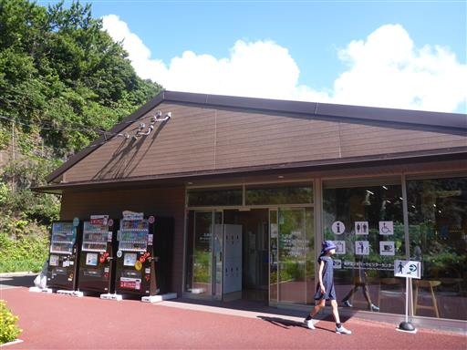
周囲に見慣れない花が咲いている。
シャクナゲのような違うような…
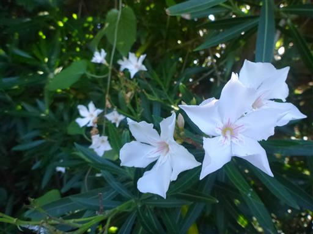
しばらく歩くと石廊埼灯台が見えてくる。
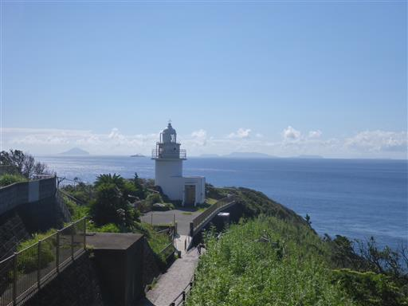
石廊埼灯台。犬吠埼灯台のように中に入ることはできない。
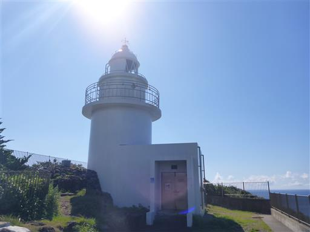
周囲は断崖絶壁だ。
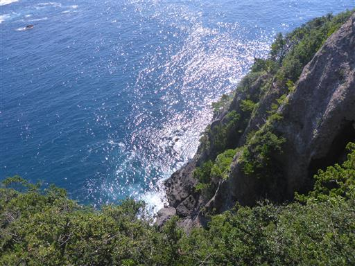
美しい伊豆の海を眺める。
昨日に引き続き波が高く、あちらこちらで白波が立っている。
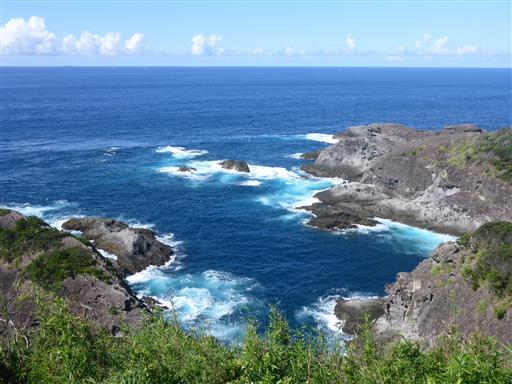
灯台から少し歩くと石廊崎の先端が見えてくる。
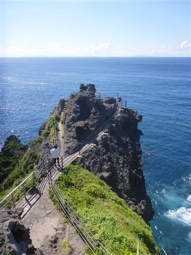
崖のなかに建つ石室神社。
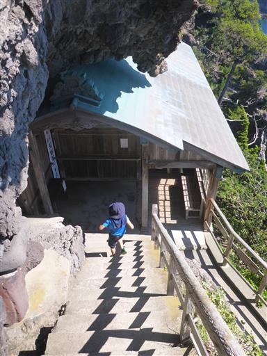
早速お参り。
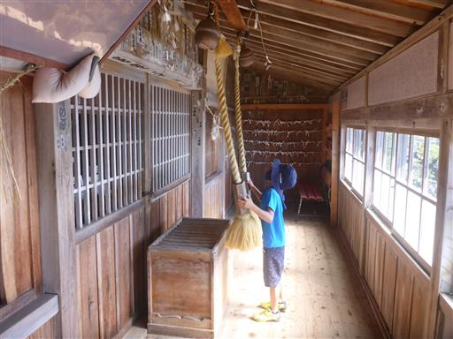
神社の窓からは、眼下に真っ青な海が見下ろせる。
まさに崖っぷちに建つ神社だ。

石廊崎の先端に移動。目の前に絶景が広がる。
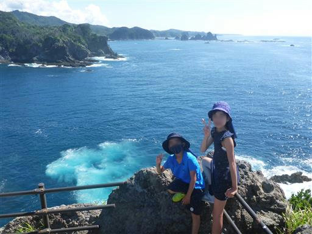
荒々しい岩壁。その先端で釣りをしている人が見える。
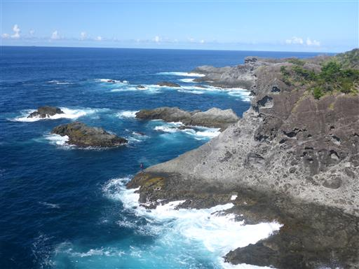
奇岩連なる蓑掛岩。
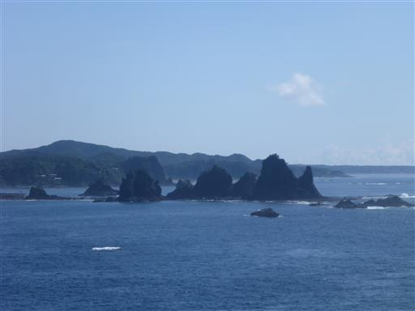
子供たちは眼下の海を見下ろしている。
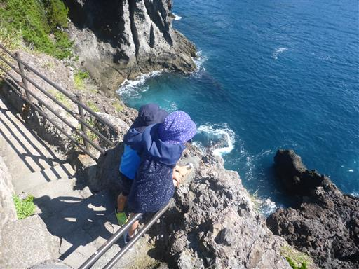
元来た方向を見ると、岩の中に埋め込まれた石室神社が見える。
すごい場所に神社を建てたものだ。
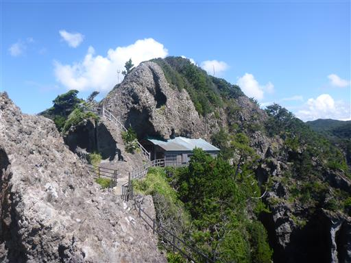
周囲を散策していると、トイレの廃墟を発見。
昔は使われていたのだろうか？

再びレストハウスに戻って、伊豆の成り立ちなどを学習する。
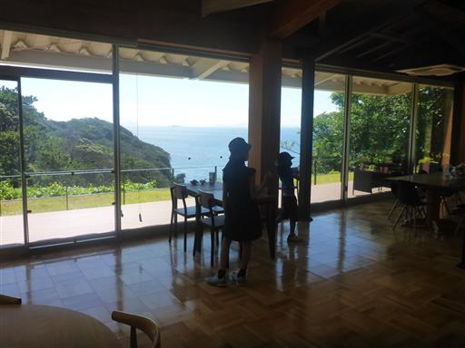
続いて堂ヶ島に向かう。途中、息子が車に酔ったため休憩。
たまたまそこが観光スポットだったため、室岩洞を見学する。
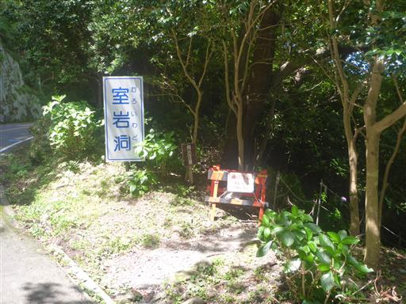
かつて石材を産出していた採石場跡。
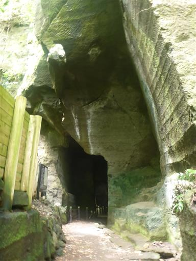
中は迷路のように入り組んでいる。
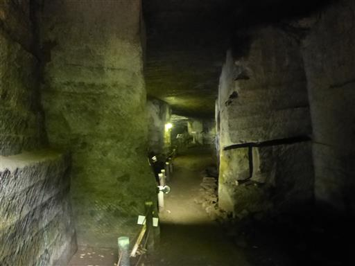
ところどころ池があるので、はまらないよう注意が必要。
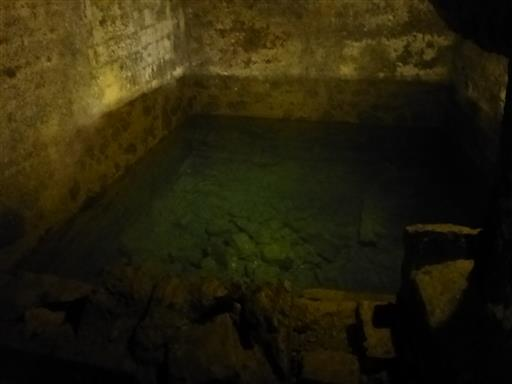
ライトアップや展示物なども整備されている。
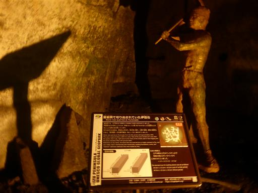
光のある所は植物が繁茂している。
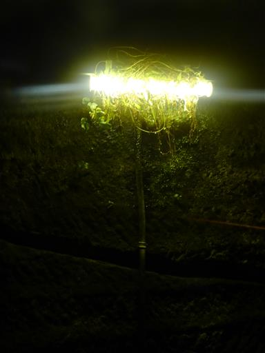
出口を発見。天井が低い。
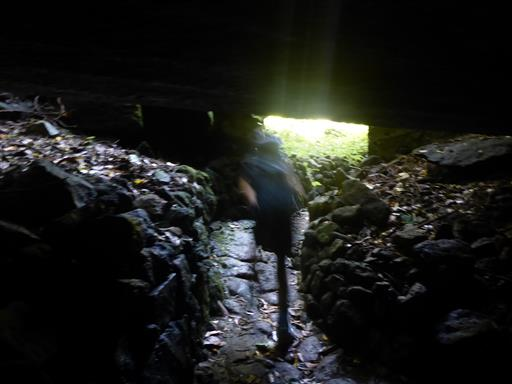
室岩洞を抜けた先は、伊豆の海の展望が広がる。
眼下でシュノーケリングをしている人が見える。恐らく船でしか辿り着けない場所だ。
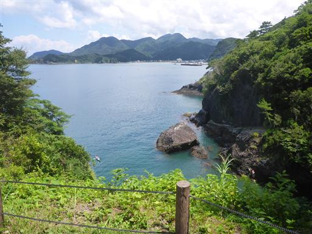
帰り道、ゴマダラカミキリを捕まえる。
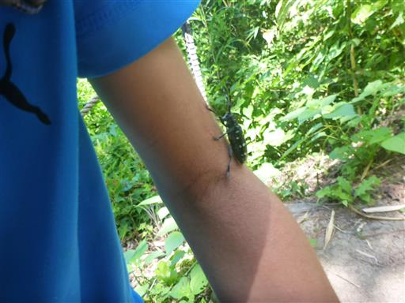
続いて堂ヶ島に移動。三四郎島のトンボロ現象を見に行く。
船をかたどった堂ヶ島温泉ホテルの側の道を下りていく。
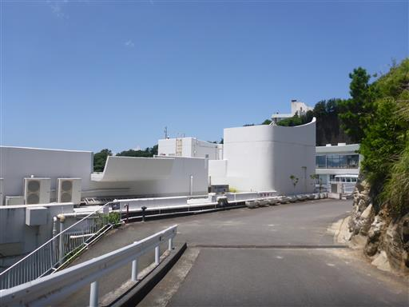
三四郎島のトンボロ現象。干潮の時のみ歩いて渡れる道だ。
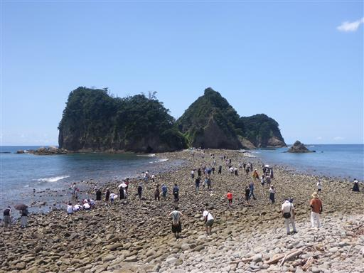
周囲は大きな石に覆われていて歩きにくい。
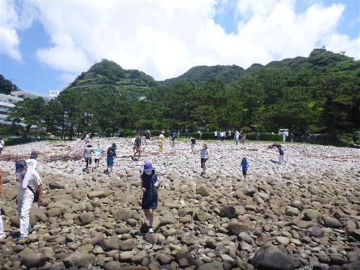
三四郎島に渡る。
干潮時のみ渡れる島は、かつて知林ヶ島やエンジェルロードに行ったが
タイミングが合わずに渡れなかった。3度目の正直で初めて渡ることができた。
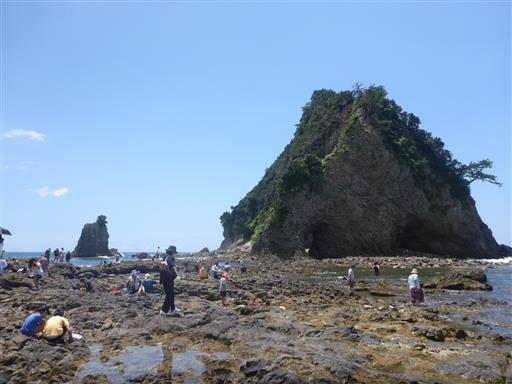
ここは絶好の磯遊びスポット。多くの人が磯遊びやシュノーケリングを楽しんでいる。

子供たちも熱心に生物探し。珍しい形のカニを発見。
30分ほどここで遊ぶ。
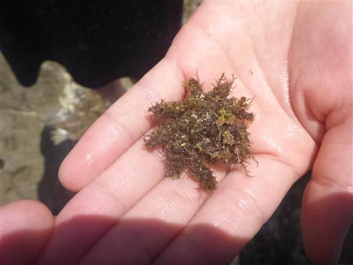
道がなくなって帰れなくなったら嫌なので、早めに戻って松の木の側でおにぎりタイム。
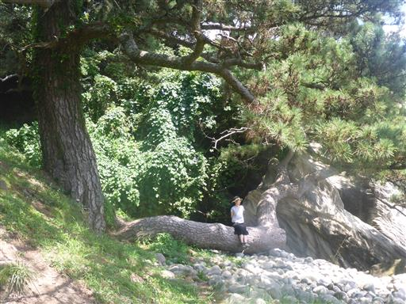
その後はこちら側で再びカニ捕り。
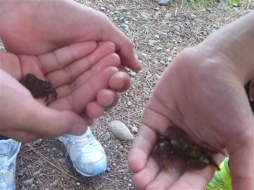
だんだんと水が増えてきて、道が閉ざされてきた。
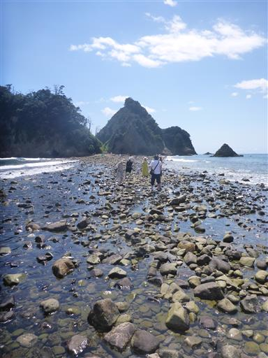
車に戻る途中、見下ろすともうほとんど道は無くなり、両側から波が押し寄せている。
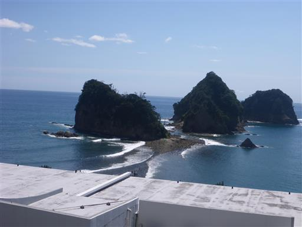
続いて遊覧船に乗る。
天窓洞という洞窟に入るのが売りなのだが、残念ながら本日は波が高く
洞窟の中には入れないとのことだ。
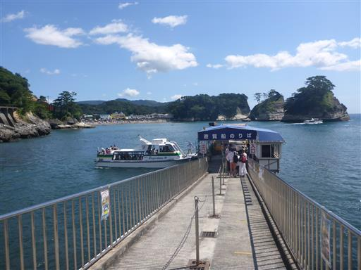
ライフジャケットを受け取ったら乗船。
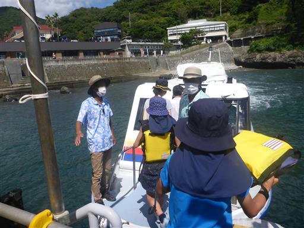
出航。
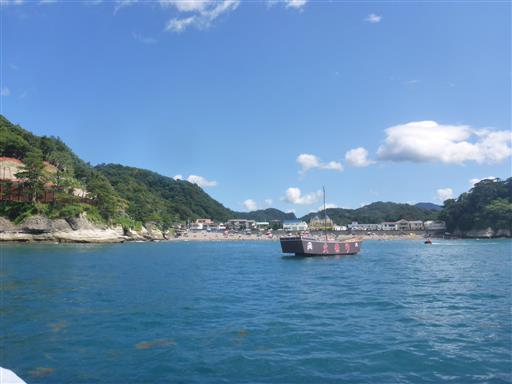
海岸線に沿って白い絶壁が続いている。
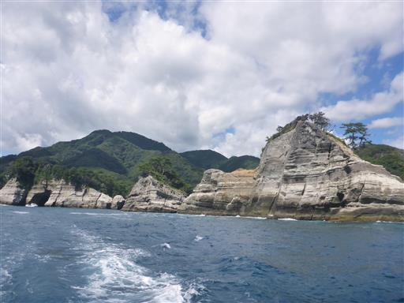
海食洞。3つの穴が開いている。
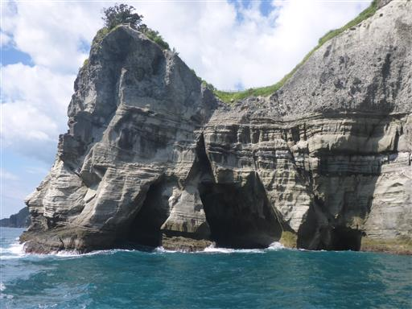
赤い鳥居を発見。藪に覆われてそうだが、その先に神社があるのだろうか？
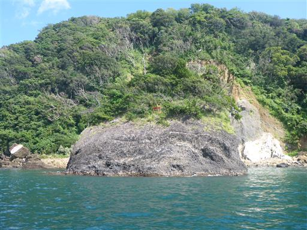
4年前に松島を訪れた際は、波と鳥しか見ていなかった息子だが、
成長した今では一応景色を見ているようだ。
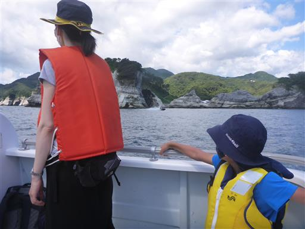
先ほど遊んだ三四郎島付近の風景。もう完全に海が繋がっていることだろう。
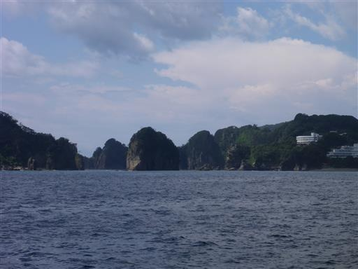
岩と岩の間の狭い海峡を通る。
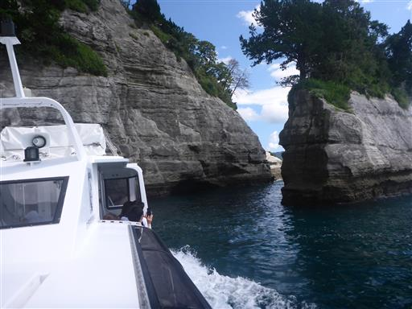
狭い海峡を通り抜ける。船と岩の間の距離はかなり近く、スリルがある。
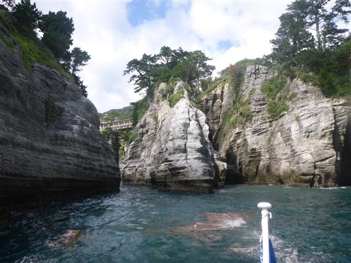
続いて天窓洞。本日は中には入れず、残念ながらここまで。
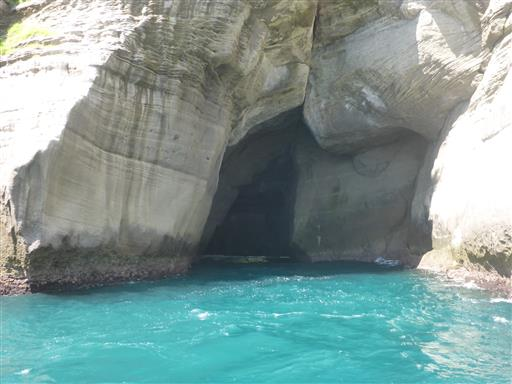
岩壁が蛇の模様の島。
ずっとこの模様が続いており、なぜこのような模様になったのか不思議だ。
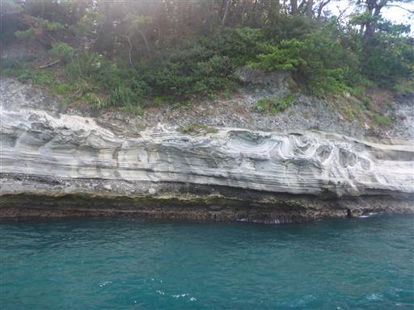
港に戻ってくる。これで本日の観光はお終い。宿に戻る。
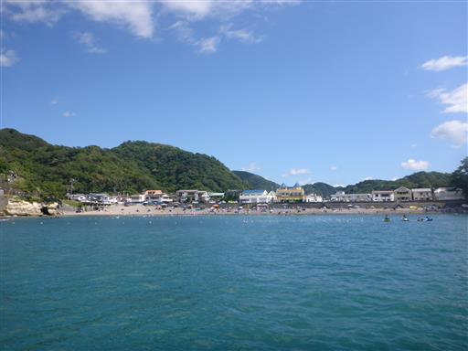
4日目
2日目の海水浴で大量に海水が鼻に入ったからか、副鼻腔炎になってしまい体調が悪い。
4日目は観光をせずに帰ることにする。
ヒリゾ浜に行けず、4日目に観光もできずで、少々不完全燃焼に終わったが
いろいろな観光スポットを巡れて、楽しい旅行だった。